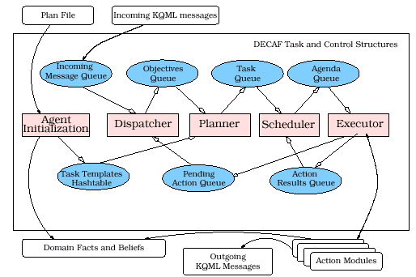

MadKit
O MadKit é uma plataforma multiagente para desenvolvimento e execução de aplicações baseadas no paradigma organizacional. Tal paradigma foca três aspectos: agentes, grupos e papéis [MAD 00].
- Agente
Um agente é uma entidade de comunicação ativa que representa papéis dentro de grupos. Dentro desta definição, é necessário determinar quais as tarefas, ou papéis, que cada agente possui na aplicação.
- Grupo
Grupos são definidos como conjuntos de agentes. Cada agente é parte de um ou mais grupos. É importante também saber que um grupo pode ser local, ou distribuído em várias máquinas.
- Papel
O papel é a representação abstrata de uma função de um agente, um serviço ou uma identificação dentro de um grupo. Cada agente pode ter vários papéis, porém cada papel dirigido por um agente é local ao grupo que pertence.
A visão de um sistema baseado em agentes, grupos e papéis pode ser uma forma de reduzir a complexidade existente no desenvolvimento de sistemas multiagentes, pois as diversidades que os grupos possuam ficam encapsuladas e a construção em módulos faz com que o desenvolvimento em grande escala seja facilitada [MAD 00].
JADE (Java Development Framework)
O JADE (Java Development Framework) é um ambiente para desenvolvimento de aplicações baseadas em agentes que segue as especificações FIPA, quanto à interoperabilidade para sistemas multiagentes. Ele foi desenvolvido graças a um convênio entre a Universidade de Parma e a empresa CSELT S.p.A. Torino. Seu principal objetivo é simplificar a implementação de serviços disponíveis para agentes. A plataforma de agentes pode ser distribuída em diversas máquinas, onde podem estar instalados diferentes sistemas operacionais. A configuração de JADE pode ser ajustada para permitir modificações em tempo de execução, permitindo que os agentes possam ser movidos de uma máquina para outra [JAD 00].
A versão JADE 2.X segue as especificações FIPA 2000, estando incluídos no ambiente o MAS (Agent Management System), o ACC (Agent Communication Channel) e o DF (Directory Facilitator). A troca de mensagens está baseada na linguagem FIPA ACL [JAD 00].
JADE preocupa-se em munir os agentes com capacidades necessárias para comunicação e interação. No entanto, o modelo abstrato do agente JADE permite a integração com softwares externos nas tarefas do agente, além do uso da ferramenta JESS para implementar o “motor de raciocíneo” do agente.
Para JADE, a comunicação é um fator muito importante, pois permite que sejam realizadas a negociação, a cooperação e a colaboração entre os agentes. Desta forma, é necessário que ela seja bem definida, tendo uma semântica bem elaborada. Com a utilização de FIPA ACL, pode-se alcançar estes objetivos, pois sua semântica de formação é muito bem estruturada [JAD 00] [FIP 97].
Existe uma ferramenta disponível neste ambiente, o RMA (Remote Monitoring Agent - Agente de Monitoramento Remoto), que é utilizado para controle de troca de mensagens entre agentes, passando pelo AMS [JAD 00]. Esta ferramenta possui uma interface gráfica que permite uma melhor visualização das interações entre os agentes.
DECAF - Distributed Environment Centered Agent Framework
O framework DECAF possibilita a construção de sistemas multiagentes segundo o enfoque de engenharia de software. Este provê uma plataforma estável para design, rápido desenvolvimento e operação de agentes inteligentes inseridos em ambientes complexos. DECAF provê uma arquitetura capaz de oferecer uma grande variedade de serviços como: comunicação, planejamento, calendário, monitoramento de execução, coordenação e, eventualmente, aprendizado e autodiagnose. Estas capacidades fazem parte do sistema interno de cada agente, cujo acesso é limitado.
Uma interface gráfica, chamada de plan-editor, facilita o controle e a programação dos agentes DECAF. Nela, ações executáveis são vistas como simples construções de blocos que podem ser conectados para se atingir objetivos mais complexos seguindo o estilo de uma rede de trabalho hierárquica.
O objetivo desta arquitetura é oferecer uma plataforma modular apropriada para atividades de pesquisa, que permita o rápido desenvolvimento de agentes de “domínio de terceiro” (third-party domain agents), e prover os meios para o desenvolvimento rápido e completo de soluções multiagentes que combinam agentes dependentes de domínios junto a agentes padrão.
Arquitetura
A figura 1 mostra a estrutura do DECAF que é composta por cinco módulos de execução internos (retângulos centrais) associados a sete estruturas de dados em fila. Como o DECAF é multi-thread, todos os módulos, menos o de inicialização, são executados concorrentemente.

Agent Initialization. quando um agente é inicializado este módulo lê um arquivo de planos que contém definições de ações básicas e tarefas pré-definidas para redução de rede. Cada tarefa de redução especificado no arquivo de planos será adicionada a biblioteca de planos do agente indexado por um objetivo particular que a redução alcança. Por fim, o agente se registra com um ANS e configura todos os sockets e comunicação de rede.
Dispatcher. aguarda o recebimento de mensagens KQML as quais serão armazenadas na estrutura de dados chamada Incoming Message Queue. Cada mensagem pode disparar uma das três ações: Primeiro, se a mensagem é parte de uma conversa em andamento, o Dispatcher encontrará a ação correspondente em Pending Action Queue. Secundo, a mensagem indica que é uma nova conversa um novo objective é criado (semelhante ao conceito de desejo do BDI) e adicionado ao Objectives Queue para o Planner. Por último, se for erro o Dispatcher o tratará.
Planner. monitora o Objectives Queue e planeja novos objetivos baseado nas ações e especificações de tarefas de rede armazenadas na biblioteca de planos. Uma cópia do plano instanciado, na forma de HTN correspondendo ao objetivo é adicionado na área chamada de Task Queue, junto a um identificador único e qualquer provisão que veio junto da mensagem recebida. A Task Queue em qualquer momento conterá estruturas de planos/tarefas instanciadas (incluindo todas as ações e subgoals) que devem ser completadas em resposta aos pedidos.
Scheduler só funciona quando Task Queue não está fazio. Seu objetivo é determinar quais ações podem ser executadas imediatamente, quais ações devem ser executadas imediatamente e a ordem em que elas devem acontecer.
Executor. executa a ação armazenada no Agenda Queue.
O resultado dessa execução é colocado no Action
Result Queue. O framework aguarda por todos os resultados para
então distribuí-los a ações que podem estar
aguardando no Task Queue. Depois disso o Executor examina o Agenda
queue para verificar se existe mais algum trabalho a ser feito.
- Java-based Agent Framework for Multi-Agent Systems - JAFMAS
JAFMAS é um framework para
representar e desenvolver problemas que requerem comportamento cooperativo
em sistema multiagentes. Seu diferencial é o foco, ao invés
de se preocupar somente com a comunicação o JAFMAS provê
mecanismos para coordenação. JAFMAS fornece suporte para o
desenvolvimento de mecanismos de coordenação entre uma coleção
de agentes inteligentes com o objetivo de organizar o conhecimento, planos,
objetivos do grupo de maneira que suas ações levem a soluções
coerentes.
A especificação atual do JAFMAS preocupa-se com a implementação de:
protocolos de comunicação: suporta comunicação direta, broadcast ou sistemas federados;
interação entre os agentes: baseada em atos de fala;
coerência e coordenação em uma comunidade multiagente: baseada nas conversas entre os agentes durante a elaboração dos planos para se atingir um objetivo.
A metodologia utilizada para o desenvolvimento de um sistema multiagente segundo o framework JAFMAS passa por cinco etapas:
Identificação dos agentes;
identificação das conversas;
identificação das regras de conversa;
análise do modelo de conversa definido;
implementação.